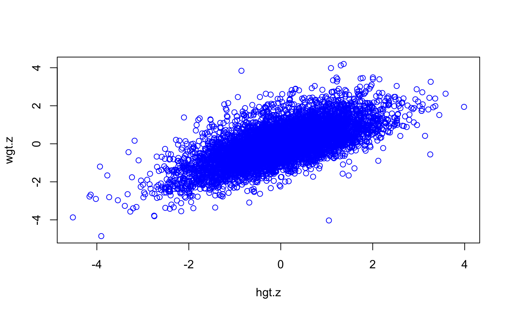

Converts measurements into age- and sex-conditional standard deviation score (SDS) using an external reference.
A numerical vector containing the outcome measurements. The length
length(y) determines the size of the output vector.
A vector containing the values of the numerical covariate (typically
decimal age or height) at which conversion is desired. Values are replicated
to match length(y).
A character vector indicating whether the male ("M") of
female ("F")reference should be used. Values are replicated to match
length(y).
A character vector indicating the level of the sub field of
the reference standard defined in ref
A data frame containing a factor sex, a numerical variable
age containing the tabulated decimal point ages, and two or more
numerical variables with reference values. See details.
A string identifying the type of distribution. Values values are:
"NO", "BCCG", "LMS", "BCPE" and "BCT".
The default is "LMS".
A scalar value indicating the number of decimals used to round the value.
The level of the sex field used when no match is
found. The default sex.fallback=NA specifies that
unmatched entries should receive a NA value.
The level of the sub field used when no match is
found. The default sub.fallback=NA specifies that
unmatched entries should receive a NA value.
Logical. If TRUE then the WHO method for
tail adjustment is applied. The default is FALSE.
For y2z(): A vector with length(y) elements containing
the standard deviation score. For z2y(): A vector with
length(z) elements containing quantiles.
Functions z2y() and y2z() are the inverse of each other.
The argument dist determines the statistical distribution. The
possibilities are as follows:
ref
should contain columns mean and sd, containing the mean and the
standard deviation in the external reference population.
ref should contain columns L, S
and M containing the LMS parameters.
ref should contain columns mu,
sigma and nu containing the Box-Cox Cole-Green parameters.
ref should contain columns mu,
sigma, nu and tau containing the Box-Cox Power
Exponential parameters.
ref should contain
columns mu, sigma, nu and tau containing the
Box-Cox T distribution parameters.
boys <- boys7482
# SDS of height 115 cm at age 5 years,
# relative to Dutch boys reference
y2z(y=115, x=5)
#> [1] 0.424
# same relative to Dutch girls
y2z(y=115, x=5, sex="F")
#> [1] 0.706
# SDS of IOTF BMI cut-off value for overweight (boys 2-18)
# relative to Dutch boys reference
cutoff <- c(
18.41, 18.15, 17.89, 17.72, 17.55, 17.49, 17.42, 17.49, 17.55, 17.74,
17.92, 18.18, 18.44, 18.77, 19.10, 19.47, 19.84, 20.20, 20.55, 20.89,
21.22, 21.57, 21.91, 22.27, 22.62, 22.96, 23.29, 23.60, 23.90, 24.18,
24.46, 24.73, 25.00)
age <- seq(2, 18, by=0.5)
(z <- y2z(y=cutoff, x=age, sex="M", ref=nl4.bmi))
#> [1] 1.448 1.459 1.411 1.371 1.299 1.255 1.189 1.190 1.173 1.209 1.223 1.255
#> [13] 1.273 1.308 1.342 1.381 1.416 1.446 1.459 1.470 1.470 1.471 1.464 1.462
#> [25] 1.452 1.442 1.426 1.412 1.395 1.382 1.375 1.368 1.372
# apply inverse transformation to check calculations
round(z2y(z, age, ref=nl4.bmi), 2)
#> [1] 18.41 18.15 17.89 17.72 17.55 17.49 17.42 17.49 17.55 17.74 17.92 18.18
#> [13] 18.44 18.77 19.10 19.47 19.84 20.20 20.55 20.89 21.22 21.57 21.91 22.27
#> [25] 22.62 22.96 23.29 23.60 23.90 24.18 24.46 24.73 25.00
cutoff
#> [1] 18.41 18.15 17.89 17.72 17.55 17.49 17.42 17.49 17.55 17.74 17.92 18.18
#> [13] 18.44 18.77 19.10 19.47 19.84 20.20 20.55 20.89 21.22 21.57 21.91 22.27
#> [25] 22.62 22.96 23.29 23.60 23.90 24.18 24.46 24.73 25.00
# calculate percentiles of weight 12 kg at 2 years (boys, girls)
100*round(pnorm(y2z(y=c(12,12), x=2, sex=c("M","F"), ref=nl4.wgt)),2)
#> [1] 24 41
# # percentage of children lighter than 15kg at ages 2-5
e <- expand.grid(age=2:5, sex=c("M","F"))
z <- y2z(y=rep(15,nrow(e)), x=e$age, sex=e$sex, ref=nl4.wgt)
w <- matrix(100*round(pnorm(z),2), nrow=2, byrow=TRUE)
dimnames(w) <- list(c("boys","girls"),2:5)
w
#> 2 3 4 5
#> boys 89 46 11 1
#> girls 96 57 16 2
# analysis in Z scale
hgt.z <- y2z(y=boys$hgt, x=boys$age, sex="M", ref=nl4.hgt)
wgt.z <- y2z(y=boys$wgt, x=boys$age, sex="M", ref=nl4.wgt)
plot(hgt.z, wgt.z, col="blue")

# z2y
# quantile at SD=0 of age 2 years,
# height Dutch boys
z2y(z=0, x=2)
#> [1] 88.85
# same for Dutch girls
z2y(z=0, x=2, sex="F")
#> [1] 87.49
# quantile at SD=c(-1,0,1) of age 2 years, BMI Dutch boys
z2y(z=c(-1,0,+1), x=2, ref=nl4.bmi)
#> [1] 15.173 16.420 17.770
# 0SD line (P50) in kg of weight for age in 5-10 year, Dutch boys
z2y(z=rep(0,6), x=5:10, ref=nl4.wgt)
#> [1] 19.82 22.37 25.03 27.86 30.76 33.79
# 95th percentile (P95), age 10 years, wfa, Dutch boys
z2y(z=qnorm(0.95), x=10, ref=nl4.wgt)
#> [1] 45.278
# table of P3, P10, P50, P90, P97 of weight for 5-10 year old dutch boys
# age per year
age <- 5:10
p <- c(0.03,0.1,0.5,0.9,0.97)
z <- rep(qnorm(p), length(age))
x <- rep(age, each=length(p))
w <- matrix(z2y(z, x=x, sex="M", ref=nl4.wgt), ncol=length(p),
byrow=TRUE)
dimnames(w) <- list(age, p)
round(w,1)
#> 0.03 0.1 0.5 0.9 0.97
#> 5 15.8 16.9 19.8 23.4 25.4
#> 6 17.6 19.0 22.4 26.8 29.3
#> 7 19.5 21.1 25.0 30.3 33.4
#> 8 21.6 23.3 27.9 34.1 37.8
#> 9 23.6 25.5 30.8 38.1 42.5
#> 10 25.6 27.8 33.8 42.2 47.5
# standard set of Z-scores of weight for all tabulated ages, boys & girls
# and three etnicities
sds <- c(-2.5, -2, -1, 0, 1, 2, 2.5)
age <- nl4.wgt$x
z <- rep(sds, times=length(age))
x <- rep(age, each=length(sds))
sex <- rep(c("M","F"), each=length(z)/2)
w <- z2y(z=z, x=x, sex=sex, ref=nl4.wgt)
w <- matrix(w, ncol=length(sds), byrow=TRUE)
dimnames(w) <- list(age, sds)
data.frame(sub=nl4.wgt$sub,sex=nl4.wgt$sex,round(w,2), row.names=NULL)
#> sub sex X.2.5 X.2 X.1 X0 X1 X2 X2.5
#> 1 N M 2.58 2.77 3.15 3.55 3.97 4.40 4.62
#> 2 N M 2.73 2.93 3.33 3.75 4.19 4.65 4.89
#> 3 N M 2.87 3.08 3.50 3.94 4.40 4.89 5.14
#> 4 N M 3.01 3.22 3.67 4.13 4.62 5.12 5.39
#> 5 N M 3.16 3.38 3.84 4.33 4.84 5.37 5.65
#> 6 N M 3.31 3.54 4.02 4.53 5.06 5.62 5.91
#> 7 N M 3.46 3.70 4.20 4.72 5.27 5.85 6.15
#> 8 N M 3.61 3.86 4.37 4.92 5.50 6.10 6.41
#> 9 N M 3.75 4.01 4.54 5.11 5.71 6.34 6.66
#> 10 N M 3.89 4.16 4.71 5.30 5.92 6.57 6.91
#> 11 N M 4.03 4.30 4.87 5.48 6.12 6.80 7.15
#> 12 N M 4.30 4.59 5.19 5.84 6.53 7.25 7.63
#> 13 N M 4.56 4.86 5.51 6.19 6.92 7.69 8.09
#> 14 N M 4.81 5.13 5.80 6.51 7.27 8.07 8.49
#> 15 N M 5.05 5.38 6.07 6.82 7.62 8.46 8.90
#> 16 N M 5.27 5.61 6.33 7.11 7.94 8.83 9.29
#> 17 N M 5.48 5.83 6.58 7.39 8.25 9.18 9.66
#> 18 N M 5.68 6.04 6.82 7.65 8.54 9.50 10.01
#> 19 N M 5.86 6.23 7.03 7.89 8.81 9.80 10.33
#> 20 N M 6.03 6.42 7.24 8.12 9.07 10.10 10.63
#> 21 N M 6.38 6.78 7.63 8.55 9.54 10.62 11.18
#> 22 N M 6.68 7.10 7.99 8.95 9.99 11.12 11.72
#> 23 N M 6.95 7.38 8.30 9.30 10.39 11.56 12.19
#> 24 N M 7.21 7.65 8.60 9.63 10.76 11.98 12.63
#> 25 N M 7.45 7.90 8.88 9.94 11.10 12.37 13.04
#> 26 N M 7.67 8.14 9.13 10.23 11.43 12.74 13.44
#> 27 N M 7.86 8.34 9.37 10.50 11.74 13.11 13.83
#> 28 N M 8.05 8.54 9.59 10.75 12.02 13.42 14.17
#> 29 N M 8.24 8.74 9.82 11.00 12.30 13.74 14.51
#> 30 N M 8.85 9.38 10.52 11.78 13.18 14.73 15.57
#> 31 N M 9.79 10.36 11.62 13.02 14.59 16.35 17.30
#> 32 N M 10.59 11.21 12.58 14.12 15.86 17.83 18.91
#> 33 N M 11.39 12.06 13.52 15.19 17.09 19.26 20.45
#> 34 N M 12.18 12.89 14.47 16.28 18.36 20.76 22.10
#> 35 N M 12.98 13.74 15.45 17.42 19.72 22.40 23.91
#> 36 N M 13.83 14.64 16.47 18.60 21.10 24.07 25.75
#> 37 N M 14.67 15.54 17.50 19.82 22.57 25.87 27.76
#> 38 N M 15.54 16.47 18.57 21.08 24.09 27.76 29.89
#> 39 N M 16.39 17.38 19.64 22.37 25.69 29.79 32.21
#> 40 N M 17.28 18.33 20.74 23.68 27.30 31.82 34.52
#> 41 N M 18.14 19.26 21.85 25.03 28.99 34.02 37.07
#> 42 N M 19.08 20.26 23.02 26.43 30.73 36.25 39.64
#> 43 N M 19.97 21.24 24.18 27.86 32.54 38.65 42.44
#> 44 N M 20.86 22.20 25.35 29.30 34.38 41.11 45.32
#> 45 N M 21.78 23.20 26.54 30.76 36.22 43.51 48.12
#> 46 N M 22.66 24.16 27.73 32.25 38.15 46.09 51.15
#> 47 N M 23.59 25.18 28.97 33.79 40.10 48.62 54.07
#> 48 N M 24.55 26.25 30.28 35.43 42.17 51.29 57.12
#> 49 N M 25.53 27.36 31.69 37.23 44.48 54.28 60.53
#> 50 N M 26.65 28.62 33.29 39.24 47.00 57.39 63.97
#> 51 N M 27.85 29.99 35.06 41.48 49.79 60.77 67.64
#> 52 N M 29.23 31.56 37.07 43.99 52.84 64.35 71.44
#> 53 N M 30.74 33.29 39.29 46.77 56.22 68.31 75.64
#> 54 N M 32.59 35.35 41.80 49.77 59.69 72.17 79.61
#> 55 N M 34.62 37.58 44.46 52.87 63.22 76.06 83.62
#> 56 N M 36.88 40.00 47.20 55.94 66.59 79.64 87.25
#> 57 N M 39.20 42.43 49.87 58.82 69.65 82.80 90.42
#> 58 N M 41.54 44.84 52.41 61.45 72.32 85.43 92.98
#> 59 N M 43.65 47.01 54.66 63.77 74.67 87.77 95.30
#> 60 N M 45.58 48.96 56.64 65.75 76.61 89.61 97.06
#> 61 N M 47.22 50.62 58.32 67.43 78.26 91.18 98.58
#> 62 N M 48.71 52.11 59.79 68.85 79.59 92.38 99.68
#> 63 N M 49.95 53.35 61.02 70.06 80.75 93.45 100.70
#> 64 N M 51.07 54.47 62.12 71.10 81.70 94.27 101.43
#> 65 N M 52.01 55.41 63.06 72.04 82.62 95.15 102.28
#> 66 N M 52.90 56.30 63.94 72.89 83.43 95.89 102.98
#> 67 N M 53.88 57.26 64.84 73.70 84.10 96.37 103.33
#> 68 N M 54.73 58.10 65.67 74.49 84.83 97.02 103.92
#> 69 N M 55.58 58.95 66.50 75.28 85.56 97.65 104.50
#> 70 N M 55.58 58.95 66.50 75.28 85.56 97.65 104.50
#> 71 N F 2.58 2.77 3.15 3.55 3.97 4.40 4.62
#> 72 N F 2.73 2.93 3.33 3.75 4.19 4.65 4.89
#> 73 N F 2.87 3.08 3.50 3.94 4.40 4.89 5.14
#> 74 N F 3.01 3.22 3.67 4.13 4.62 5.12 5.39
#> 75 N F 3.16 3.38 3.84 4.33 4.84 5.37 5.65
#> 76 N F 3.31 3.54 4.02 4.53 5.06 5.62 5.91
#> 77 N F 3.46 3.70 4.20 4.72 5.27 5.85 6.15
#> 78 N F 3.61 3.86 4.37 4.92 5.50 6.10 6.41
#> 79 N F 3.75 4.01 4.54 5.11 5.71 6.34 6.66
#> 80 N F 3.89 4.16 4.71 5.30 5.92 6.57 6.91
#> 81 N F 4.03 4.30 4.87 5.48 6.12 6.80 7.15
#> 82 N F 4.30 4.59 5.19 5.84 6.53 7.25 7.63
#> 83 N F 4.56 4.86 5.51 6.19 6.92 7.69 8.09
#> 84 N F 4.81 5.13 5.80 6.51 7.27 8.07 8.49
#> 85 N F 5.05 5.38 6.07 6.82 7.62 8.46 8.90
#> 86 N F 5.27 5.61 6.33 7.11 7.94 8.83 9.29
#> 87 N F 5.48 5.83 6.58 7.39 8.25 9.18 9.66
#> 88 N F 5.68 6.04 6.82 7.65 8.54 9.50 10.01
#> 89 N F 5.86 6.23 7.03 7.89 8.81 9.80 10.33
#> 90 N F 6.03 6.42 7.24 8.12 9.07 10.10 10.63
#> 91 N F 6.38 6.78 7.63 8.55 9.54 10.62 11.18
#> 92 N F 6.68 7.10 7.99 8.95 9.99 11.12 11.72
#> 93 N F 6.95 7.38 8.30 9.30 10.39 11.56 12.19
#> 94 N F 7.21 7.65 8.60 9.63 10.76 11.98 12.63
#> 95 N F 7.45 7.90 8.88 9.94 11.10 12.37 13.04
#> 96 N F 7.67 8.14 9.13 10.23 11.43 12.74 13.44
#> 97 N F 7.86 8.34 9.37 10.50 11.74 13.11 13.83
#> 98 N F 8.05 8.54 9.59 10.75 12.02 13.42 14.17
#> 99 N F 8.24 8.74 9.82 11.00 12.30 13.74 14.51
#> 100 N F 8.85 9.38 10.52 11.78 13.18 14.73 15.57
#> 101 N F 9.79 10.36 11.62 13.02 14.59 16.35 17.30
#> 102 N F 10.59 11.21 12.58 14.12 15.86 17.83 18.91
#> 103 N F 11.39 12.06 13.52 15.19 17.09 19.26 20.45
#> 104 N F 12.18 12.89 14.47 16.28 18.36 20.76 22.10
#> 105 N F 12.98 13.74 15.45 17.42 19.72 22.40 23.91
#> 106 N F 13.83 14.64 16.47 18.60 21.10 24.07 25.75
#> 107 N F 14.67 15.54 17.50 19.82 22.57 25.87 27.76
#> 108 N F 15.54 16.47 18.57 21.08 24.09 27.76 29.89
#> 109 N F 16.39 17.38 19.64 22.37 25.69 29.79 32.21
#> 110 N F 17.28 18.33 20.74 23.68 27.30 31.82 34.52
#> 111 N F 18.14 19.26 21.85 25.03 28.99 34.02 37.07
#> 112 N F 19.08 20.26 23.02 26.43 30.73 36.25 39.64
#> 113 N F 19.97 21.24 24.18 27.86 32.54 38.65 42.44
#> 114 N F 20.86 22.20 25.35 29.30 34.38 41.11 45.32
#> 115 N F 21.78 23.20 26.54 30.76 36.22 43.51 48.12
#> 116 N F 22.66 24.16 27.73 32.25 38.15 46.09 51.15
#> 117 N F 23.59 25.18 28.97 33.79 40.10 48.62 54.07
#> 118 N F 24.55 26.25 30.28 35.43 42.17 51.29 57.12
#> 119 N F 25.53 27.36 31.69 37.23 44.48 54.28 60.53
#> 120 N F 26.65 28.62 33.29 39.24 47.00 57.39 63.97
#> 121 N F 27.85 29.99 35.06 41.48 49.79 60.77 67.64
#> 122 N F 29.23 31.56 37.07 43.99 52.84 64.35 71.44
#> 123 N F 30.74 33.29 39.29 46.77 56.22 68.31 75.64
#> 124 N F 32.59 35.35 41.80 49.77 59.69 72.17 79.61
#> 125 N F 34.62 37.58 44.46 52.87 63.22 76.06 83.62
#> 126 N F 36.88 40.00 47.20 55.94 66.59 79.64 87.25
#> 127 N F 39.20 42.43 49.87 58.82 69.65 82.80 90.42
#> 128 N F 41.54 44.84 52.41 61.45 72.32 85.43 92.98
#> 129 N F 43.65 47.01 54.66 63.77 74.67 87.77 95.30
#> 130 N F 45.58 48.96 56.64 65.75 76.61 89.61 97.06
#> 131 N F 47.22 50.62 58.32 67.43 78.26 91.18 98.58
#> 132 N F 48.71 52.11 59.79 68.85 79.59 92.38 99.68
#> 133 N F 49.95 53.35 61.02 70.06 80.75 93.45 100.70
#> 134 N F 51.07 54.47 62.12 71.10 81.70 94.27 101.43
#> 135 N F 52.01 55.41 63.06 72.04 82.62 95.15 102.28
#> 136 N F 52.90 56.30 63.94 72.89 83.43 95.89 102.98
#> 137 N F 53.88 57.26 64.84 73.70 84.10 96.37 103.33
#> 138 N F 54.73 58.10 65.67 74.49 84.83 97.02 103.92
#> 139 N F 55.58 58.95 66.50 75.28 85.56 97.65 104.50
#> 140 N F 55.58 58.95 66.50 75.28 85.56 97.65 104.50
#> 141 T M 2.58 2.77 3.15 3.55 3.97 4.40 4.62
#> 142 T M 2.73 2.93 3.33 3.75 4.19 4.65 4.89
#> 143 T M 2.87 3.08 3.50 3.94 4.40 4.89 5.14
#> 144 T M 3.01 3.22 3.67 4.13 4.62 5.12 5.39
#> 145 T M 3.16 3.38 3.84 4.33 4.84 5.37 5.65
#> 146 T M 3.31 3.54 4.02 4.53 5.06 5.62 5.91
#> 147 T M 3.46 3.70 4.20 4.72 5.27 5.85 6.15
#> 148 T M 3.61 3.86 4.37 4.92 5.50 6.10 6.41
#> 149 T M 3.75 4.01 4.54 5.11 5.71 6.34 6.66
#> 150 T M 3.89 4.16 4.71 5.30 5.92 6.57 6.91
#> 151 T M 4.03 4.30 4.87 5.48 6.12 6.80 7.15
#> 152 T M 4.30 4.59 5.19 5.84 6.53 7.25 7.63
#> 153 T M 4.56 4.86 5.51 6.19 6.92 7.69 8.09
#> 154 T M 4.81 5.13 5.80 6.51 7.27 8.07 8.49
#> 155 T M 5.05 5.38 6.07 6.82 7.62 8.46 8.90
#> 156 T M 5.27 5.61 6.33 7.11 7.94 8.83 9.29
#> 157 T M 5.48 5.83 6.58 7.39 8.25 9.18 9.66
#> 158 T M 5.68 6.04 6.82 7.65 8.54 9.50 10.01
#> 159 T M 5.86 6.23 7.03 7.89 8.81 9.80 10.33
#> 160 T M 6.03 6.42 7.24 8.12 9.07 10.10 10.63
#> 161 T M 6.38 6.78 7.63 8.55 9.54 10.62 11.18
#> 162 T M 6.68 7.10 7.99 8.95 9.99 11.12 11.72
#> 163 T M 6.95 7.38 8.30 9.30 10.39 11.56 12.19
#> 164 T M 7.21 7.65 8.60 9.63 10.76 11.98 12.63
#> 165 T M 7.45 7.90 8.88 9.94 11.10 12.37 13.04
#> 166 T M 7.67 8.14 9.13 10.23 11.43 12.74 13.44
#> 167 T M 7.86 8.34 9.37 10.50 11.74 13.11 13.83
#> 168 T M 8.05 8.54 9.59 10.75 12.02 13.42 14.17
#> 169 T M 8.24 8.74 9.82 11.00 12.30 13.74 14.51
#> 170 T M 8.85 9.38 10.52 11.78 13.18 14.73 15.57
#> 171 T M 9.79 10.36 11.62 13.02 14.59 16.35 17.30
#> 172 T M 10.59 11.21 12.58 14.12 15.86 17.83 18.91
#> 173 T M 11.39 12.06 13.52 15.19 17.09 19.26 20.45
#> 174 T M 12.18 12.89 14.47 16.28 18.36 20.76 22.10
#> 175 T M 12.98 13.74 15.45 17.42 19.72 22.40 23.91
#> 176 T M 13.83 14.64 16.47 18.60 21.10 24.07 25.75
#> 177 T M 14.67 15.54 17.50 19.82 22.57 25.87 27.76
#> 178 T M 15.54 16.47 18.57 21.08 24.09 27.76 29.89
#> 179 T M 16.39 17.38 19.64 22.37 25.69 29.79 32.21
#> 180 T M 17.28 18.33 20.74 23.68 27.30 31.82 34.52
#> 181 T M 18.14 19.26 21.85 25.03 28.99 34.02 37.07
#> 182 T M 19.08 20.26 23.02 26.43 30.73 36.25 39.64
#> 183 T M 19.97 21.24 24.18 27.86 32.54 38.65 42.44
#> 184 T M 20.86 22.20 25.35 29.30 34.38 41.11 45.32
#> 185 T M 21.78 23.20 26.54 30.76 36.22 43.51 48.12
#> 186 T M 22.66 24.16 27.73 32.25 38.15 46.09 51.15
#> 187 T M 23.59 25.18 28.97 33.79 40.10 48.62 54.07
#> 188 T M 24.55 26.25 30.28 35.43 42.17 51.29 57.12
#> 189 T M 25.53 27.36 31.69 37.23 44.48 54.28 60.53
#> 190 T M 26.65 28.62 33.29 39.24 47.00 57.39 63.97
#> 191 T M 27.85 29.99 35.06 41.48 49.79 60.77 67.64
#> 192 T M 29.23 31.56 37.07 43.99 52.84 64.35 71.44
#> 193 T M 30.74 33.29 39.29 46.77 56.22 68.31 75.64
#> 194 T M 32.59 35.35 41.80 49.77 59.69 72.17 79.61
#> 195 T M 34.62 37.58 44.46 52.87 63.22 76.06 83.62
#> 196 T M 36.88 40.00 47.20 55.94 66.59 79.64 87.25
#> 197 T M 39.20 42.43 49.87 58.82 69.65 82.80 90.42
#> 198 T M 41.54 44.84 52.41 61.45 72.32 85.43 92.98
#> 199 T M 43.65 47.01 54.66 63.77 74.67 87.77 95.30
#> 200 T M 45.58 48.96 56.64 65.75 76.61 89.61 97.06
#> 201 T M 47.22 50.62 58.32 67.43 78.26 91.18 98.58
#> 202 T M 48.71 52.11 59.79 68.85 79.59 92.38 99.68
#> 203 T M 49.95 53.35 61.02 70.06 80.75 93.45 100.70
#> 204 T M 51.07 54.47 62.12 71.10 81.70 94.27 101.43
#> 205 T M 52.01 55.41 63.06 72.04 82.62 95.15 102.28
#> 206 T M 52.90 56.30 63.94 72.89 83.43 95.89 102.98
#> 207 T M 53.88 57.26 64.84 73.70 84.10 96.37 103.33
#> 208 T M 48.33 50.76 56.51 63.85 73.58 87.13 96.14
#> 209 T F 2.46 2.63 2.97 3.34 3.74 4.16 4.39
#> 210 T F 2.59 2.76 3.12 3.51 3.93 4.38 4.62
#> 211 T F 2.73 2.90 3.28 3.69 4.13 4.60 4.85
#> 212 T F 2.85 3.04 3.43 3.86 4.32 4.82 5.08
#> 213 T F 2.98 3.17 3.58 4.03 4.51 5.03 5.30
#> 214 T F 3.11 3.32 3.74 4.21 4.71 5.26 5.54
#> 215 T F 3.25 3.46 3.90 4.38 4.90 5.46 5.76
#> 216 T F 3.38 3.60 4.06 4.56 5.10 5.68 5.99
#> 217 T F 3.51 3.74 4.21 4.73 5.29 5.90 6.22
#> 218 T F 3.65 3.88 4.37 4.90 5.48 6.10 6.43
#> 219 T F 3.78 4.02 4.52 5.07 5.67 6.31 6.66
#> 220 T F 4.03 4.28 4.82 5.40 6.04 6.73 7.10
#> 221 T F 4.28 4.54 5.11 5.72 6.39 7.12 7.50
#> 222 T F 4.52 4.79 5.38 6.03 6.74 7.50 7.91
#> 223 T F 4.74 5.03 5.64 6.32 7.06 7.87 8.30
#> 224 T F 4.96 5.25 5.89 6.59 7.36 8.19 8.64
#> 225 T F 5.16 5.46 6.12 6.85 7.65 8.52 8.98
#> 226 T F 5.35 5.66 6.35 7.10 7.93 8.83 9.32
#> 227 T F 5.54 5.86 6.56 7.33 8.18 9.10 9.60
#> 228 T F 5.71 6.04 6.76 7.55 8.42 9.38 9.89
#> 229 T F 6.02 6.36 7.12 7.95 8.87 9.88 10.43
#> 230 T F 6.30 6.66 7.45 8.32 9.28 10.35 10.92
#> 231 T F 6.56 6.94 7.76 8.66 9.66 10.78 11.38
#> 232 T F 6.82 7.21 8.04 8.97 10.00 11.14 11.76
#> 233 T F 7.04 7.44 8.30 9.27 10.35 11.55 12.20
#> 234 T F 7.25 7.66 8.55 9.55 10.66 11.90 12.57
#> 235 T F 7.46 7.88 8.79 9.81 10.95 12.23 12.92
#> 236 T F 7.65 8.08 9.01 10.06 11.23 12.54 13.26
#> 237 T F 7.84 8.27 9.23 10.30 11.50 12.85 13.58
#> 238 T F 8.41 8.88 9.90 11.06 12.37 13.84 14.65
#> 239 T F 9.35 9.87 11.02 12.32 13.81 15.51 16.45
#> 240 T F 10.23 10.80 12.07 13.52 15.19 17.12 18.20
#> 241 T F 11.06 11.68 13.07 14.68 16.55 18.74 19.97
#> 242 T F 11.86 12.54 14.05 15.82 17.90 20.36 21.77
#> 243 T F 12.64 13.37 15.01 16.94 19.24 21.99 23.57
#> 244 T F 13.38 14.16 15.94 18.05 20.59 23.68 25.48
#> 245 T F 14.15 14.99 16.90 19.21 22.02 25.48 27.53
#> 246 T F 14.96 15.86 17.92 20.44 23.54 27.42 29.75
#> 247 T F 15.80 16.76 19.01 21.77 25.22 29.62 32.29
#> 248 T F 16.72 17.76 20.18 23.19 27.00 31.92 34.96
#> 249 T F 17.61 18.74 21.37 24.68 28.93 34.55 38.07
#> 250 T F 18.55 19.76 22.61 26.22 30.92 37.24 41.26
#> 251 T F 19.50 20.79 23.87 27.80 32.98 40.03 44.59
#> 252 T F 20.39 21.78 25.11 29.40 35.12 43.02 48.19
#> 253 T F 21.31 22.80 26.39 31.04 37.28 46.00 51.76
#> 254 T F 22.24 23.85 27.71 32.75 39.55 49.10 55.43
#> 255 T F 23.21 24.94 29.09 34.52 41.85 52.15 58.97
#> 256 T F 24.16 26.03 30.52 36.40 44.34 55.48 62.85
#> 257 T F 25.28 27.29 32.13 38.46 46.96 58.77 66.50
#> 258 T F 26.52 28.70 33.93 40.73 49.78 62.19 70.19
#> 259 T F 28.05 30.39 36.00 43.21 52.69 65.44 73.53
#> 260 T F 29.93 32.41 38.30 45.80 55.49 68.27 76.23
#> 261 T F 32.00 34.58 40.67 48.32 58.08 70.76 78.54
#> 262 T F 34.15 36.78 42.95 50.64 60.37 72.87 80.48
#> 263 T F 36.26 38.89 45.06 52.70 62.33 74.66 82.15
#> 264 T F 38.19 40.81 46.92 54.48 64.00 76.21 83.65
#> 265 T F 39.83 42.43 48.48 56.00 65.49 77.74 85.24
#> 266 T F 41.24 43.81 49.82 57.29 66.77 79.10 86.71
#> 267 T F 42.42 44.98 50.93 58.37 67.86 80.31 88.08
#> 268 T F 43.48 46.00 51.90 59.28 68.74 81.24 89.10
#> 269 T F 44.23 46.75 52.64 60.04 69.59 82.33 90.42
#> 270 T F 44.99 47.48 53.33 60.70 70.24 83.04 91.22
#> 271 T F 45.58 48.07 53.90 61.27 70.85 83.81 92.14
#> 272 T F 46.14 48.61 54.43 61.79 71.41 84.48 92.95
#> 273 T F 46.63 49.10 54.90 62.25 71.89 85.06 93.64
#> 274 T F 47.11 49.56 55.34 62.68 72.33 85.57 94.24
#> 275 T F 47.55 49.99 55.75 63.08 72.73 86.03 94.77
#> 276 T F 47.90 50.34 56.11 63.47 73.20 86.71 95.66
#> 277 T F 48.33 50.76 56.51 63.85 73.58 87.13 96.14
#> 278 M M 2.46 2.63 2.97 3.34 3.74 4.16 4.39
#> 279 M M 2.59 2.76 3.12 3.51 3.93 4.38 4.62
#> 280 M M 2.73 2.90 3.28 3.69 4.13 4.60 4.85
#> 281 M M 2.85 3.04 3.43 3.86 4.32 4.82 5.08
#> 282 M M 2.98 3.17 3.58 4.03 4.51 5.03 5.30
#> 283 M M 3.11 3.32 3.74 4.21 4.71 5.26 5.54
#> 284 M M 3.25 3.46 3.90 4.38 4.90 5.46 5.76
#> 285 M M 3.38 3.60 4.06 4.56 5.10 5.68 5.99
#> 286 M M 3.51 3.74 4.21 4.73 5.29 5.90 6.22
#> 287 M M 3.65 3.88 4.37 4.90 5.48 6.10 6.43
#> 288 M M 3.78 4.02 4.52 5.07 5.67 6.31 6.66
#> 289 M M 4.03 4.28 4.82 5.40 6.04 6.73 7.10
#> 290 M M 4.28 4.54 5.11 5.72 6.39 7.12 7.50
#> 291 M M 4.52 4.79 5.38 6.03 6.74 7.50 7.91
#> 292 M M 4.74 5.03 5.64 6.32 7.06 7.87 8.30
#> 293 M M 4.96 5.25 5.89 6.59 7.36 8.19 8.64
#> 294 M M 5.16 5.46 6.12 6.85 7.65 8.52 8.98
#> 295 M M 5.35 5.66 6.35 7.10 7.93 8.83 9.32
#> 296 M M 5.54 5.86 6.56 7.33 8.18 9.10 9.60
#> 297 M M 5.71 6.04 6.76 7.55 8.42 9.38 9.89
#> 298 M M 6.02 6.36 7.12 7.95 8.87 9.88 10.43
#> 299 M M 6.30 6.66 7.45 8.32 9.28 10.35 10.92
#> 300 M M 6.56 6.94 7.76 8.66 9.66 10.78 11.38
#> 301 M M 6.82 7.21 8.04 8.97 10.00 11.14 11.76
#> 302 M M 7.04 7.44 8.30 9.27 10.35 11.55 12.20
#> 303 M M 7.25 7.66 8.55 9.55 10.66 11.90 12.57
#> 304 M M 7.46 7.88 8.79 9.81 10.95 12.23 12.92
#> 305 M M 7.65 8.08 9.01 10.06 11.23 12.54 13.26
#> 306 M M 7.84 8.27 9.23 10.30 11.50 12.85 13.58
#> 307 M M 8.41 8.88 9.90 11.06 12.37 13.84 14.65
#> 308 M M 9.35 9.87 11.02 12.32 13.81 15.51 16.45
#> 309 M M 10.23 10.80 12.07 13.52 15.19 17.12 18.20
#> 310 M M 11.06 11.68 13.07 14.68 16.55 18.74 19.97
#> 311 M M 11.86 12.54 14.05 15.82 17.90 20.36 21.77
#> 312 M M 12.64 13.37 15.01 16.94 19.24 21.99 23.57
#> 313 M M 13.38 14.16 15.94 18.05 20.59 23.68 25.48
#> 314 M M 14.15 14.99 16.90 19.21 22.02 25.48 27.53
#> 315 M M 14.96 15.86 17.92 20.44 23.54 27.42 29.75
#> 316 M M 15.80 16.76 19.01 21.77 25.22 29.62 32.29
#> 317 M M 16.72 17.76 20.18 23.19 27.00 31.92 34.96
#> 318 M M 17.61 18.74 21.37 24.68 28.93 34.55 38.07
#> 319 M M 18.55 19.76 22.61 26.22 30.92 37.24 41.26
#> 320 M M 19.50 20.79 23.87 27.80 32.98 40.03 44.59
#> 321 M M 20.39 21.78 25.11 29.40 35.12 43.02 48.19
#> 322 M M 21.31 22.80 26.39 31.04 37.28 46.00 51.76
#> 323 M M 22.24 23.85 27.71 32.75 39.55 49.10 55.43
#> 324 M M 23.21 24.94 29.09 34.52 41.85 52.15 58.97
#> 325 M M 24.16 26.03 30.52 36.40 44.34 55.48 62.85
#> 326 M M 25.28 27.29 32.13 38.46 46.96 58.77 66.50
#> 327 M M 26.52 28.70 33.93 40.73 49.78 62.19 70.19
#> 328 M M 28.05 30.39 36.00 43.21 52.69 65.44 73.53
#> 329 M M 29.93 32.41 38.30 45.80 55.49 68.27 76.23
#> 330 M M 32.00 34.58 40.67 48.32 58.08 70.76 78.54
#> 331 M M 34.15 36.78 42.95 50.64 60.37 72.87 80.48
#> 332 M M 36.26 38.89 45.06 52.70 62.33 74.66 82.15
#> 333 M M 38.19 40.81 46.92 54.48 64.00 76.21 83.65
#> 334 M M 39.83 42.43 48.48 56.00 65.49 77.74 85.24
#> 335 M M 41.24 43.81 49.82 57.29 66.77 79.10 86.71
#> 336 M M 42.42 44.98 50.93 58.37 67.86 80.31 88.08
#> 337 M M 43.48 46.00 51.90 59.28 68.74 81.24 89.10
#> 338 M M 44.23 46.75 52.64 60.04 69.59 82.33 90.42
#> 339 M M 44.99 47.48 53.33 60.70 70.24 83.04 91.22
#> 340 M M 45.58 48.07 53.90 61.27 70.85 83.81 92.14
#> 341 M M 46.14 48.61 54.43 61.79 71.41 84.48 92.95
#> 342 M M 46.63 49.10 54.90 62.25 71.89 85.06 93.64
#> 343 M M 47.11 49.56 55.34 62.68 72.33 85.57 94.24
#> 344 M M 47.55 49.99 55.75 63.08 72.73 86.03 94.77
#> 345 M M 48.33 50.76 56.51 63.85 73.58 87.13 96.14
#> 346 M F 2.46 2.63 2.97 3.34 3.74 4.16 4.39
#> 347 M F 2.59 2.76 3.12 3.51 3.93 4.38 4.62
#> 348 M F 2.73 2.90 3.28 3.69 4.13 4.60 4.85
#> 349 M F 2.85 3.04 3.43 3.86 4.32 4.82 5.08
#> 350 M F 2.98 3.17 3.58 4.03 4.51 5.03 5.30
#> 351 M F 3.11 3.32 3.74 4.21 4.71 5.26 5.54
#> 352 M F 3.25 3.46 3.90 4.38 4.90 5.46 5.76
#> 353 M F 3.38 3.60 4.06 4.56 5.10 5.68 5.99
#> 354 M F 3.51 3.74 4.21 4.73 5.29 5.90 6.22
#> 355 M F 3.65 3.88 4.37 4.90 5.48 6.10 6.43
#> 356 M F 3.78 4.02 4.52 5.07 5.67 6.31 6.66
#> 357 M F 4.03 4.28 4.82 5.40 6.04 6.73 7.10
#> 358 M F 4.28 4.54 5.11 5.72 6.39 7.12 7.50
#> 359 M F 4.52 4.79 5.38 6.03 6.74 7.50 7.91
#> 360 M F 4.74 5.03 5.64 6.32 7.06 7.87 8.30
#> 361 M F 4.96 5.25 5.89 6.59 7.36 8.19 8.64
#> 362 M F 5.16 5.46 6.12 6.85 7.65 8.52 8.98
#> 363 M F 5.35 5.66 6.35 7.10 7.93 8.83 9.32
#> 364 M F 5.54 5.86 6.56 7.33 8.18 9.10 9.60
#> 365 M F 5.71 6.04 6.76 7.55 8.42 9.38 9.89
#> 366 M F 6.02 6.36 7.12 7.95 8.87 9.88 10.43
#> 367 M F 6.30 6.66 7.45 8.32 9.28 10.35 10.92
#> 368 M F 6.56 6.94 7.76 8.66 9.66 10.78 11.38
#> 369 M F 6.82 7.21 8.04 8.97 10.00 11.14 11.76
#> 370 M F 7.04 7.44 8.30 9.27 10.35 11.55 12.20
#> 371 M F 7.25 7.66 8.55 9.55 10.66 11.90 12.57
#> 372 M F 7.46 7.88 8.79 9.81 10.95 12.23 12.92
#> 373 M F 7.65 8.08 9.01 10.06 11.23 12.54 13.26
#> 374 M F 7.84 8.27 9.23 10.30 11.50 12.85 13.58
#> 375 M F 8.41 8.88 9.90 11.06 12.37 13.84 14.65
#> 376 M F 9.35 9.87 11.02 12.32 13.81 15.51 16.45
#> 377 M F 10.23 10.80 12.07 13.52 15.19 17.12 18.20
#> 378 M F 11.06 11.68 13.07 14.68 16.55 18.74 19.97
#> 379 M F 11.86 12.54 14.05 15.82 17.90 20.36 21.77
#> 380 M F 12.64 13.37 15.01 16.94 19.24 21.99 23.57
#> 381 M F 13.38 14.16 15.94 18.05 20.59 23.68 25.48
#> 382 M F 14.15 14.99 16.90 19.21 22.02 25.48 27.53
#> 383 M F 14.96 15.86 17.92 20.44 23.54 27.42 29.75
#> 384 M F 15.80 16.76 19.01 21.77 25.22 29.62 32.29
#> 385 M F 16.72 17.76 20.18 23.19 27.00 31.92 34.96
#> 386 M F 17.61 18.74 21.37 24.68 28.93 34.55 38.07
#> 387 M F 18.55 19.76 22.61 26.22 30.92 37.24 41.26
#> 388 M F 19.50 20.79 23.87 27.80 32.98 40.03 44.59
#> 389 M F 20.39 21.78 25.11 29.40 35.12 43.02 48.19
#> 390 M F 21.31 22.80 26.39 31.04 37.28 46.00 51.76
#> 391 M F 22.24 23.85 27.71 32.75 39.55 49.10 55.43
#> 392 M F 23.21 24.94 29.09 34.52 41.85 52.15 58.97
#> 393 M F 24.16 26.03 30.52 36.40 44.34 55.48 62.85
#> 394 M F 25.28 27.29 32.13 38.46 46.96 58.77 66.50
#> 395 M F 26.52 28.70 33.93 40.73 49.78 62.19 70.19
#> 396 M F 28.05 30.39 36.00 43.21 52.69 65.44 73.53
#> 397 M F 29.93 32.41 38.30 45.80 55.49 68.27 76.23
#> 398 M F 32.00 34.58 40.67 48.32 58.08 70.76 78.54
#> 399 M F 34.15 36.78 42.95 50.64 60.37 72.87 80.48
#> 400 M F 36.26 38.89 45.06 52.70 62.33 74.66 82.15
#> 401 M F 38.19 40.81 46.92 54.48 64.00 76.21 83.65
#> 402 M F 39.83 42.43 48.48 56.00 65.49 77.74 85.24
#> 403 M F 41.24 43.81 49.82 57.29 66.77 79.10 86.71
#> 404 M F 42.42 44.98 50.93 58.37 67.86 80.31 88.08
#> 405 M F 43.48 46.00 51.90 59.28 68.74 81.24 89.10
#> 406 M F 44.23 46.75 52.64 60.04 69.59 82.33 90.42
#> 407 M F 44.99 47.48 53.33 60.70 70.24 83.04 91.22
#> 408 M F 45.58 48.07 53.90 61.27 70.85 83.81 92.14
#> 409 M F 46.14 48.61 54.43 61.79 71.41 84.48 92.95
#> 410 M F 46.63 49.10 54.90 62.25 71.89 85.06 93.64
#> 411 M F 47.11 49.56 55.34 62.68 72.33 85.57 94.24
#> 412 M F 47.55 49.99 55.75 63.08 72.73 86.03 94.77
#> 413 M F 47.90 50.34 56.11 63.47 73.20 86.71 95.66
#> 414 M F 48.33 50.76 56.51 63.85 73.58 87.13 96.14
# P85 of BMI in 5-8 year old Dutch boys and girls
e <- expand.grid(age=5:8, sex=c("M","F"))
w <- z2y(z=rep(qnorm(0.85),nrow(e)), x=e$age, sex=e$sex, ref=nl4.bmi)
w <- matrix(w, nrow=2, byrow=TRUE)
dimnames(w) <- list(c("boys","girls"),5:8)
w
#> 5 6 7 8
#> boys 17.152 17.282 17.508 17.857
#> girls 17.090 17.386 17.837 18.327
# data transformation of height z-scores to cm-scale
z <- c(-1.83, 0.09, 2.33, 0.81, -1.20)
x <- c(8.33, 0.23, 19.2, 24.3, 10)
sex <- c("M", "M", "F", "M", "F")
round(z2y(z=z, x=x, sex=sex, ref=nl4.hgt), 1)
#> [1] 123.8 60.7 185.3 189.7 135.6
# interpolate published height standard
# to daily values, days 0-31, boys
# on centiles -2SD, 0SD and +2SD
days <- 0:31
sds <- c(-2, 0, +2)
z <- rep(sds, length(days))
x <- rep(round(days/365.25,4), each=length(sds))
w <- z2y(z, x, sex="M", ref=nl4.hgt)
w <- matrix(w, ncol=length(sds), byrow=TRUE)
dimnames(w) <- list(days, sds)
w
#> -2 0 2
#> 0 47.163 51.320 55.477
#> 1 47.265 51.430 55.594
#> 2 47.371 51.543 55.716
#> 3 47.474 51.653 55.833
#> 4 47.580 51.767 55.954
#> 5 47.682 51.877 56.071
#> 6 47.784 51.986 56.188
#> 7 47.890 52.100 56.310
#> 8 47.993 52.210 56.427
#> 9 48.096 52.321 56.545
#> 10 48.203 52.435 56.667
#> 11 48.305 52.545 56.785
#> 12 48.412 52.659 56.907
#> 13 48.515 52.770 57.024
#> 14 48.618 52.880 57.142
#> 15 48.727 52.995 57.264
#> 16 48.832 53.106 57.381
#> 17 48.937 53.217 57.498
#> 18 49.046 53.333 57.619
#> 19 49.151 53.444 57.736
#> 20 49.260 53.559 57.857
#> 21 49.366 53.670 57.974
#> 22 49.469 53.781 58.093
#> 23 49.577 53.896 58.216
#> 24 49.681 54.007 58.334
#> 25 49.784 54.118 58.453
#> 26 49.892 54.234 58.576
#> 27 49.996 54.345 58.694
#> 28 50.103 54.460 58.817
#> 29 50.213 54.573 58.933
#> 30 50.324 54.686 59.049
#> 31 50.438 54.803 59.169